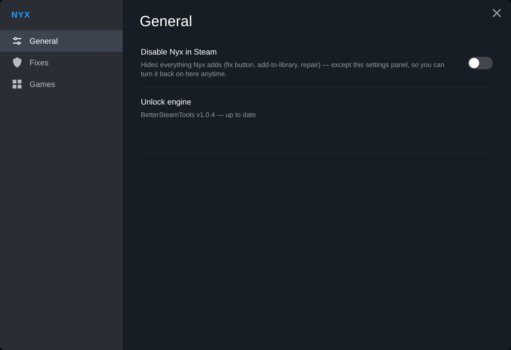
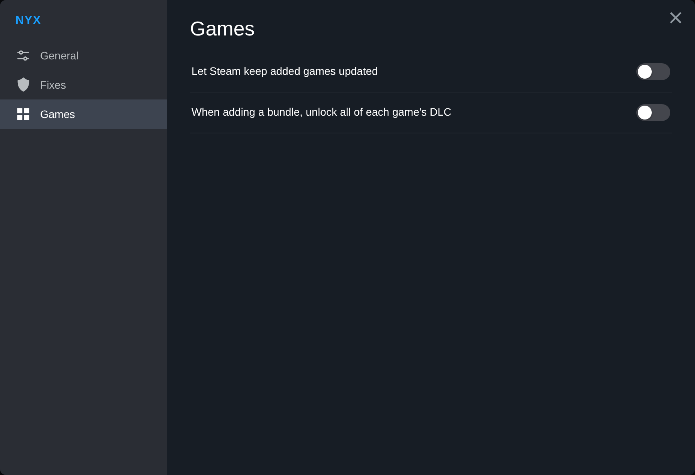
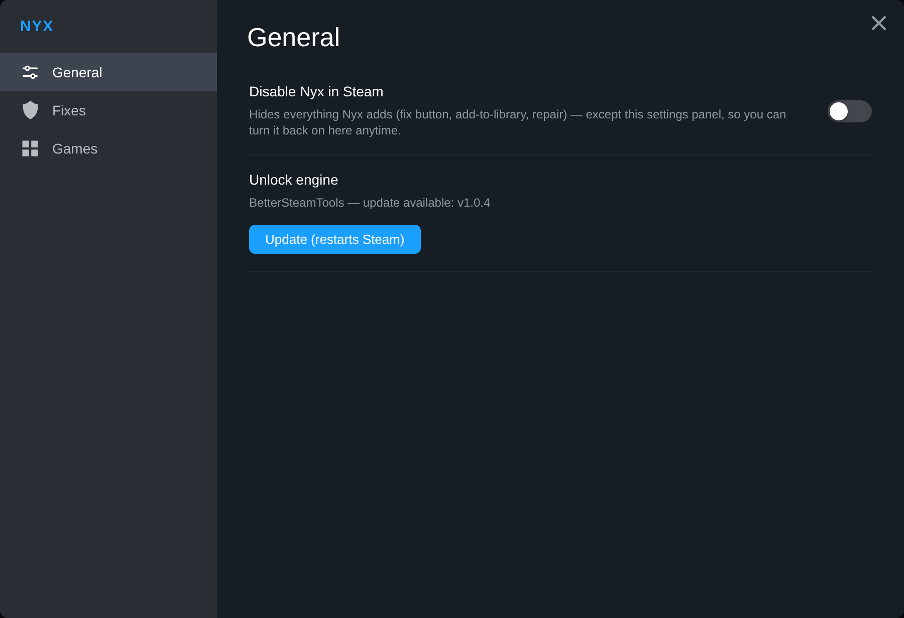

Every Steam game,
on your terms.
Nyx adds games to your Steam library and keeps them on the latest build — straight from the store page, no clutter.
Built to disappear into Steam
No second launcher, no separate library. Nyx works from inside Steam and gets out of the way.
Add from the store page
Open any game's Steam store page and click “Add via Nyx.” It lands in your library like anything else.
Always the current build
Nyx pulls the manifests for the build Steam is shipping today, so your games install and update to the real latest version.
DLC included
Most games come with their DLC already entitled when you add them — nothing extra to hunt down.
Native settings
A real Steam ▸ Nyx settings panel: pick libraries, toggle behavior, restart Steam — right where you'd expect it.
Kill-switch
Turn Nyx off inside Steam in one click. Everything hides and Steam behaves exactly as it did before — fully reversible.
Standalone or plugin
Run the standalone tray app, or drop in the Millennium plugin if you already use Millennium. Same core, your choice.
It lives inside Steam
No extra window to tab into — Nyx's controls sit in a native Steam ▸ Nyx settings panel.



Pick your version
Both are free and update themselves. Not sure? Take the standalone.
Nyx Standalone
A small tray app that sets everything up for you. The simplest way to start — nothing else required.
Download NyxMillennium Plugin
For people already running Millennium. Installs the Nyx plugin into your existing setup.
Get the pluginThree steps, then it's just Steam
Install & launch
Run Nyx once. It sets up the unlock engine and adds a Nyx entry inside Steam — no manual file wrangling.
Add a game
Go to a game's store page and choose Add via Nyx. It fetches the current manifests and writes them where Steam looks.
Install & play
Restart Steam when prompted, then download and play like any owned game. Updates follow the live build.
Questions people actually ask
Do I need to own the game?›
Will my games stay up to date?›
What about online games and Denuvo?›
Is it safe for my account?›
.lua files and deploys its unlock engine. It never logs into your account, never asks for your password, and never modifies game binaries. As with any tool of this kind, keep added multiplayer games off VAC-secured servers.Why does antivirus flag the download?›
Standalone or Millennium plugin?›
How do I remove a game, or Nyx itself?›
Nyx plugin folder. Your installed games stay put.What Nyx touches on your PC
Nyx is readable — the plugin ships as plain Lua and JavaScript, and the app is unobfuscated. Here's exactly what changes, and how to undo it.
What it changes
- ›Deploys the unlock engine into your Steam folder so added games can install.
- ›Writes game
.luaand.manifestfiles into Steam's config and depot cache. - ›Stores its own settings under
%LocalAppData%\Nyx— never your Steam credentials. - ›That's it. No account login, no telemetry on what you play.
Removing things
- ›A game: open its store page ▸ Nyx icon ▸ Remove via Nyx.
- ›Nyx itself: flip the kill-switch in Steam ▸ Nyx to hide everything, or delete the engine files and the
Nyxplugin folder. - ›Removing Nyx leaves your installed games where they are.